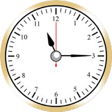
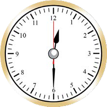
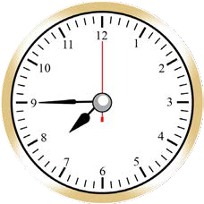
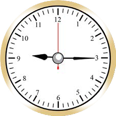
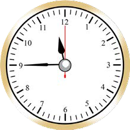
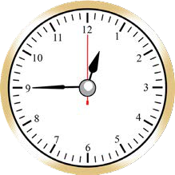

| lunch | 12:15 afternoon | 1:45 afternoon |
| practical training | 1:45 afternoon | 4:15 evening |
| entertainment | 4:15 evening | 6:00 evening |
(a)
How much time does Doto spend on doing physical exercises?
(b)
How much time does Doto spend on having lunch?
(c)
How much time does practical training take?
(d)
Which activities take more than 1 hour 30 minutes?
(e)
Which activity takes the shortest duration?
(f)
Which activity takes the longest duration?
14.
Study each of the following clock faces, then find the time spent:
Starting time
Ending time
(a)
Starting time

Ending time

(b)
Starting time

Ending time

(c)
Starting time

Ending time
